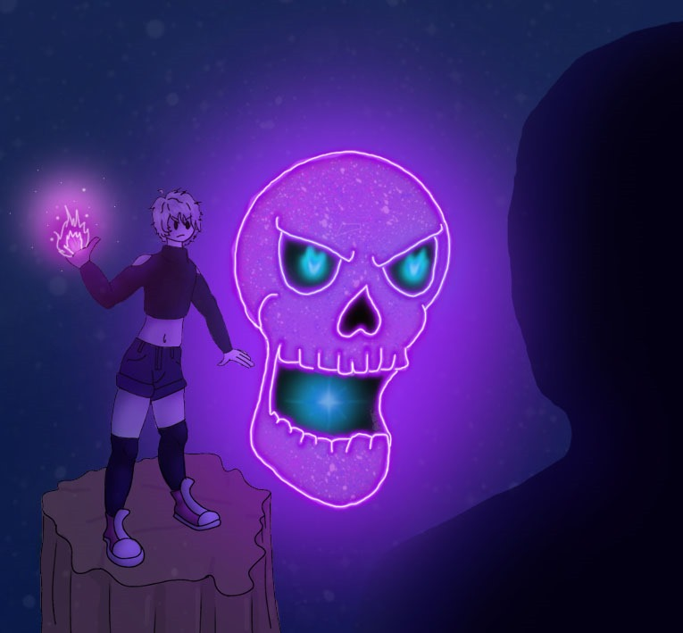
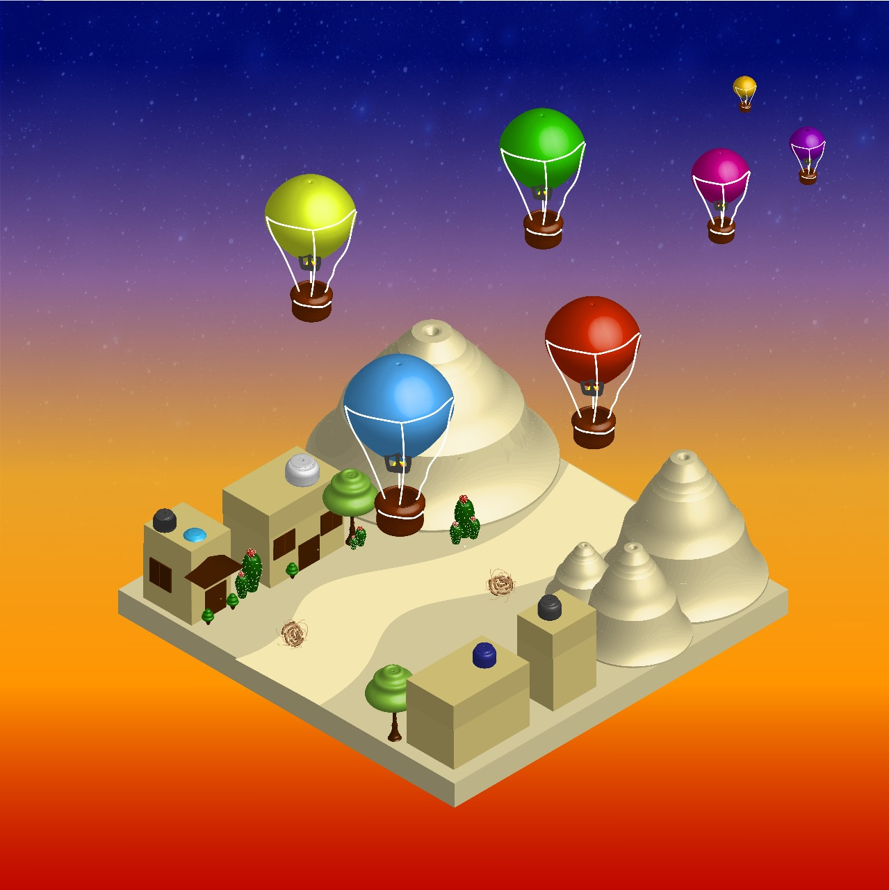

Concept Art
Un concept art de un personaje hecho en Adobe Illustrator.
Este es un concept art creado por Jade Diaz Alferez. Se usó el programa de illustrator para crear el concepto de un personaje juvenil y poderoso, agregando iluminación sombría para resaltar el poder mágico que emite.

Fotomontaje Minecraft
Fotomontaje de un personaje de Minecraft hecho en Adobe Photoshop.
Realizado por Jade Diaz Alferez. Se creó el fotomontaje en el programa de photoshop, se usaron 5 imágenes diferentes para crearlo, se ajustó la iluminación de cada una y se agregaron sombras para dar un toque más de integración entre el fondo y las imágenes subexpuestas.

Isométrico Jade
Diseño isométrico de un personaje hecho en Adobe Photoshop.
Isométrico realizado en illustrator basándose en la emoción del amor y en un clima desierto, dando un contraste entre ambos, dando un mensaje profundo.

LUNÁCTICO
Fotomontaje de luna hecho en Adobe Photoshop.
Fotomontaje realizado en photoshop, intentado dar una impresión de grandeza sobre la realidad.

MÁS ALLÁ
Fotomontaje de un paisaje hecho en Adobe Photoshop.
Fotomontaje realizado en photoshop sobre una de las maravillas del mundo queriendo resaltar la importancia de la maravilla haciendo nítido el resto.

NYO
Personaje vectorizado hecho en Adobe Illustrator.
Caracterización de un personaje ficticio realizado en Photoshop, es una estilo sin líneas ocupando distintos colores para crear un contraste entre capas para dar ese efecto sin líneas.

Paisaje
Fotomontaje de paisaje hecho en Adobe Photoshop.
Fotomontaje queriendo transmitir la emoción de relajación y tranquilidad, usando colores oscuros y relajantes de un bosque.

PIJAMA BOB ESPONJA
Producto hecho en Adobe Photoshop
Diseño de un pijama con diseño de bob esponja creado en Illustrator para el diseño de marca.

Isométrico de cuarto
Isométrico de un cuarto hecho en Adobe Photoshop.
Isométrico realizado con la aplicación de adobe recreando una recámara en 3D.